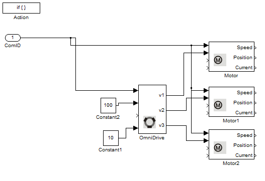

DigitalInput Example
This example illustrates the use of the Digital Inputs on Robotino. The optical sensors, which are connected to the digital inputs, are used to detect a coloured line on the floor and follow it.
Contents

Blocks used in this example
Description
There are two optical sensors on Robotino which are connected to digital inputs 0 (DIN1) and 1 (DIN2). They both are located next to each other at the front of the robot. The optical sensors output false (0) when they are directly above the black line (black in our case) and true (1) when they are not. Using the readings from both the sensors, we can rotate the robot clockwise or counter-clockwise with a constant velocity of 100mm/s in the X direction to achieve motion along the path of the line.
We obtain the optical sensor readings from the digital sensors of the robots. The idea is simple, if the left sensor outputs true (1), then we rotate right and if the right sensor outputs true (1), we rotate Robotino to the left. If both the sensors output false (0) that means Robotino is on the line and then we simply move Robotino forward.
Case 1: Both sensors output false (0)
Case 2: Left sensor outputs true (1)
Case 3: Right sensor outputs true (1)
